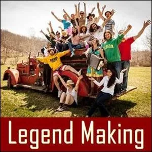

High Level Fun on Strikingly
[

](https://lowdrama.mystrikingly.com/)
Make it High Level Fun to Create Low Drama as Theatre
Matrix Code HILEVFUN.01
When people are together at a Possibility Team or on Halloween or another social occasion, there is an opportunity to do this experiment. You can do this experiment in stead of doing something like charades.
To do the experiment make a team of three, with two of the people in the team who have a charge between them. These two go on stage in front of a bigger audience, and act out their Low Drama, consciously, as High Level Fun. In full four-feeling exaggerated expression, have them act it out, not as a subtle thing, but as an obviously low drama thing.
The third person gives feedback and coaching, like a director in a theatre, so they don't leave out the juicy parts.
As many teams of three can do this experiment as will fit in the time of the gathering.
Each person from each team of three, when one 'act' has been performed, can enter Matrix Code HILEVFUN.01 in their free account at StartOver.xyz.
This Experiment is worth 1 Matrix Point.
[

](https://becomemoney.mystrikingly.com/)
Make a Pirate Agreement Commitment About Your Sloppiness
Matrix Code HILEVFUN.02
For the next Possibility Team or 3-Cell team meeting, everyone has to bring 100Euros/$ in cash to get in on the game.
In groups of three, share about what is sloppy in your lives. Then find a commitment each person could make right now that is slightly over their edge.
For example:
- show up at least three minutes early to every meeting space for the next month
- clean out one closet in your house each week until each closet it cleaned out
- clean your car once a month for the next three months
- build and altar to your muse, including fresh flowers, and take care of it for a whole month
Create measurable, straightforward Pirate Agreements: Person A makes their agreement with Person B, and Person B makes theirs with Person C and Person C makes theirs with Person A. Write then down, take photos of the agreements and send them to each other. Mark dates in calendars.
The Pirate Agreement is that each person will give the hundred Euros/$ cash to their pirate partner, and if they do not do the agreement, by the agreed date, the partner keeps the money.
Set up a call on the final date for each agreement, to find out if the money is kept or given back.
When each person has either got their money back or not, they can enter Matrix Code HILEVFUN.02 in their free account at StartOver.xyz.
This Experiment is worth 2 Matrix Points, even if you broke your Pirate Agreement. You still built Matrix.
[

](https://legendmaking.mystrikingly.com/)
High Level Fun Discovery
Matrix Code HILEVFUN.03
When there is a a big project that scares the shit out of you and you can't do alone, you can create an experience of High Level Fun Discovery.
Call a meeting on or offline with 3-6 people max.
The purpose of the meeting is for you to put the project on the table, the one that it is in your heart but that has too many variables for you to figure out on your own. For the first 10 minutes, describe your vision, using your conscious anger, Dragon Speaking.
Then open the floor to ideas, possibilities, anything.
One rule is you can't say no to any of the ideas.
Create a creative collaborative "yes, and..." conversation for one hour about your project.
After the meeting, each person can enter Matrix Code HILEVFUN.03 in their free account at StartOver.xyz.
This Experiment is worth 1 Matrix Point.

Secret Meeting of Geniuses
Matrix Code HILEVFUN.04
In your Possibility Team or as a special meeting, have each person come as one of their heroes, fictional or real, who is a genius in service to humanity, Gaia, evolution.
Shift identity into that character, dress up, and begin the meeting.
In this secret meeting of transformation agents, changemakers, the idea is to upgrade the future of humanity. Ask anything of any of the other people who are at this secret meeting of geniuses.
Make plans that are implementable that these characters can do and then commit to doing them together, as a team, for one month.
Set up any additional meetings, chat groups or events as decided.
At the end of the month, create a way to celebrate what happened.
Then each person can enter Matrix Code HILEVFUN.04 in their free account at StartOver.xyz.
This Experiment is worth 3 Matrix Points.
Shift to High Drama
Matrix Code HILEVFUN.05
This experiment is about shifting onto High Drama from Low Drama, so you can do it in your life.
With a group of three, as part of a Possibility Team or another group, one person brings a low drama from their life.
With a timer set for 15 minutes, this person tells the story of the low drama again, shifting into High Drama. The second person writes down the ways they see the person shift. The third person can also coach the first person, giving more tips and hints about how to shift into High Drama. The second person can write those down too.
Have each person take a 15 minute turn going from Low Drama to High Drama, while the others write down how they did it, and add possibilities.
At the end of the meeting, each person can enter Matrix Code HILEVFUN.05 in their free account at StartOver.xyz.
This Experiment is worth 1 Matrix Point.
Send us the list of ways to shift: General Memetics (annechloe dot destremau at gmail dot com)
[
](https://yourgremlin.mystrikingly.com/)
Call the Dangerous People
Matrix Code HILEVFUN.06
Do this experiment with 2-4 other people.
Make a list in your BEEP! Book of 5 people you are afraid to talk to and what you want to talk to them about.
Get out your phones. One by one, make the calls.
Your team can coach you while you make the call. Make the call, talk about what you want to talk about, and wrap it up.
You will need your conscious Gremlin to do what your Box can't do.
When you have made your five calls, and coached at least 2 others through five calls, each person can enter Matrix Code HILEVFUN.06 in their free account at StartOver.xyz.
This Experiment is worth 2 Matrix Points.
[
](https://edgeworker.mystrikingly.com/)
High Level Fun Birthday
Matrix Code HILEVFUN.07
Every day is your birthday.
Gather a group of 3-4 friends, minimum and plan a whole day of edgework and high level fun adventures.
It might include, for example, roller coaster rides, a tour of a chocolate factory, or another factory where you can go in and find out how stuff is made. Sing songs for people on the bus or train as you travel. Hold doors open for each other. Host a pop-up Rage Club Introduction in the park. Find ways to make it High Level Fun.
When you get home, for at least 20 minutes, write about the day in your BEEP! Book, the distinctions that made the day High Level Fun.
Then enter Matrix Code HILEVFUN.07 in you free account at StartOver.xyz.
This Experiment is worth 2 Matrix Points.
[

](https://archetypallineage.mystrikingly.com/)
Another High Level Fun Birthday
Matrix Code HILEVFUN.08
Good thing every day is your Birthday.
Go with four people to a Very Nice Restaurant, dressed to the hilt, maybe as your Archetypal Lineage, and order samples of all kinds of food, especially foods you have never eaten before.
Notice what happens when the other people in the restaurant, the patrons and staff, and what happens when High Level Fun is happening.
After desert, talk together about what you noticed about the distinction of High Level Fun. What makes it happen? What shifts it out?
Each person can write about their reflections in their BEEP! Books and enter Matrix Code HILEVFUN.08 in their free account at StartOver.xyz.
This Experiment is worth 2 Matrix Points.

High Level Fun High Off the Ground
Matrix Code HILEVFUN.09
Go with a team and do a ropes course, as a team. Cheer each other on, celebrate Winning Happening.
Let Conscious Fear get bigger and hold space so the information of it can come through.
Don't be a Looking Good team, be a Learning Team.
Then each enter Matrix Code HILEVFUN.09 in your free account at StartOver.xyz.
This Experiment is worth 2 Matrix Points.
[
](https://possibilitycouchsurfing.mystrikingly.com/)
High Level Fun Possibility Couchsurfing Trip
Matrix Code HILEVFUN.10
Plan a minimum of a three month trip where you visit Possibility Managers around the world and stay a max of 10 days in each place.
Figure out the purpose of each stop in the trip: How are you going to serve the people to make their time with you complete high level fun?
Make it so that the legend precedes you to the next house, even though they don't know what you are going to do.
After three months, enter Matrix Code HILEVFUN.10 in your free account at StartOver.xyz.
This Experiment is worth 20 Matrix Points.
[
](https://ecco.mystrikingly.com/)
Appreciate Your Enemy
Matrix Code HILEVFUN.11
High Level Fun is even possible with your enemies.
Pick your top 3 enemies.
In your BEEP! Book write the three stories you have that makes each person your enemy.
Tell the story to a friend.
Then, make an appointment, hopefully in person, with your enemy; if not, as a video call, and appreciate the hell out of them for about 3 minutes.
This is not about apologizing, and it is not about the pain you created about making them your enemy.
Appreciate the qualities of their being that have nothing to do with your story about how they are your enemy.
Just forget about that for this experiment, go in and deliver the communication to them that you see through their whole personality and why Gaia is glad they are alive on planet earth. Not you opinion. Why ECCO is glad they are alive.
Then say: "Thanks for letting me tell you this, I have been carrying this around for a while deep in me." And leave.
Do this with all three of your enemies.
Then tell your friend how it went.
Then enter Matrix Code HILEVFUN.11 in your free account at StartOver.xyz.
This Experiment is worth 2 Matrix Points.
[

](https://becomecommitted.mystrikingly.com/)
Plant the First Tree of an Edible Forest
Matrix Code HILEVFUN.12
Wherever you are in the world there are certain kinds of trees that grow fruits or nuts.
Go to a local nursery store and buy as many of the trees you can.
Then take them to places where people go by, and plant them, so that other people who come by it will benefit from the fruits and nuts.
You don't have to "have a garden" or "have land" or to have a Permaculture Design Certificate to plant the first tree of an edible forest.
If you don't have a way to transport the trees, find a way that involves some other people. If you don't have tools, borrow whatever shovels or wheel barrows it takes to do the experiment. Become committed (archived — not captured)!
If people come by when you are planting it, tell them that you create edible forests.
Make it part of you resume.
Enter Matrix Code HILEVFUN.12 in your free account at StartOver.xyz for every 3 fruit or nut trees you plant.
This Experiment is worth 2 Matrix Points.
[

](https://gameworldalchemist.mystrikingly.com/)
The High Level Fun of GameWorld Creation
Matrix Code HILEVFUN.13
Build a Next Culture game world that has never been invented, a gameworld that solves problems.
Have it include Training Projects, Writing Projects, different meeting technologies, Thoughtware Upgrade Centers, Intimacy Cafes, Possibility Cafes.
Create a Codex for it, and for each of it's parts, experiment with it and ask for feedback and experiment more, implementing the feedback so it works better.
When you have been experimenting with this gameworld for 6 months, enter Matrix Code HILEVFUN.13 in your free account at StartOver.xyz.
This Experiment is worth 20 Matrix Points.
[
](http://replaceyourself.mystrikingly.com/)
The High Level Fun of Replacing Yourself
Matrix Code HILEVFUN.14
Give away a Gameworld you have created to someone else. Empower them to take your place in Holding Space and Navigating Space in your previous post in the Gameworld. Make sure they are jacked-in to the Inner Resources and Outer Resources that are needed for the job.
Find out how to do it by doing it. Then teach others how to do it. Make it part of your Gameworld Context to Replace Yourself!
Then enter Matrix Code HILEVFUN.14 in your free account at StartOver.xyz.
This Experiment is worth 8 Matrix Points.
Then go build a new gameworld.